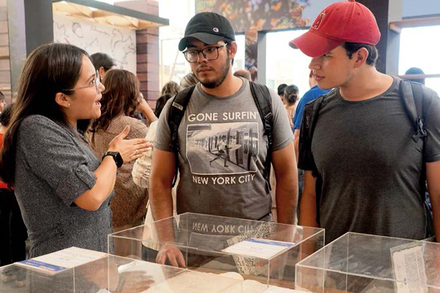

Enfocamos nuestros esfuerzos en acciones de mejora continua para incrementar la confianza ciudadana
Desde el inicio de la implementación de nuestro Modelo de Justicia nos enfocamos en ofrecer una Justicia de Calidad, concentramos nuestros esfuerzos en mantenernos constantemente actualizados, en revisar y optimizar nuestros procesos, y en ampliar la cobertura de la administración de justicia.
En este apartado detallamos las acciones destinadas a la mejora continua en el tema de calidad, con el objetivo de incrementar la confianza ciudadana. Damos cuenta además, de las acciones realizadas por los órganos de apoyo a la función jurisdiccional como la Central de Actuarios, la Oficialía de Partes y el Archivo Judicial General, órganos que se encuentran en proceso de certificación para eficientar su desempeño.
Señalamos también, los principales datos estadísticos que reflejan el trabajo de los órganos jurisdiccionales de primera y segunda instancia del Poder Judicial, los cuales representan el principal vínculo con la sociedad y respaldan el quehacer fundamental de este poder público: la administración de justicia.

Mencionamos las acciones para fortalecer la operación del Sistema de Justicia Penal en nuestra entidad y los resultados obtenidos tras su consolidación. Derivado de estas acciones, la organización de la sociedad civil, México Evalúa, nos reconoció, por segundo año consecutivo, como la segunda entidad mejor calificada en el Sistema de Justicia Penal en México.
Además, explicamos la situación de los recursos financieros recibidos y su adecuada aplicación.
Calidad en los servicios proporcionados
En el transcurso del ejercicio 2024, a través de la Coordinación de Calidad del Instituto Estatal de Defensoría Pública, implementamos estrategias para optimizar la atención y el apoyo que brindamos, y así asegurar que cada persona reciba una asesoría, acompañamiento y defensa digna, efectiva y eficiente. Nuestro enfoque se centra en escuchar, entender y atender las necesidades, problemáticas o conflictos de quienes confían en nosotros, priorizando siempre la calidad en cada acción que emprendemos.
El trabajo coordinado entre las Unidades y áreas del Instituto, nos ha permitido fortalecer la confianza de las y los coahuilenses en los servicios públicos de asesoramiento y defensa legal, promoviendo el acceso a la justicia de manera integral y con altos estándares de calidad.
Este año, computamos dos mil 108 cuestionarios que nos permitieron medir la satisfacción de quienes recibieron del Taller de Orientación Prematrimonial, a través de su análisis nos fue posible obtener datos que representan oportunidades de mejora, nos retroalimentan e impulsan a continuar trabajando en fortalecer el tejido social.
Informamos que, a efecto de medir el índice de satisfacción de las personas usuarias, efectuamos cuatro mil 243 encuestas, alcanzando un 98.99 por ciento de apreciación general.
Estos resultados nos motivan a continuar con el enfoque de proporcionar una atención cercana y apegada a la garantía de acceso a la justicia.

Sistema Integral de Calidad y Gestión Documental
Avances en la Certificación ISO 9001 y 30301
Durante el año 2024, el proceso de certificación de los sistemas de gestión de calidad ISO 9001 y 30301 ha sido una prioridad para este poder público, mantenemos el objetivo de garantizar la mejora continua y la eficiencia operativa en los diversos servicios proporcionados.
1. CAPACITACIÓN AL PERSONAL
En el marco de la preparación para la certificación ISO 9001 y 30301, llevamos a cabo diversas capacitaciones dirigidas al personal de las áreas del Poder Judicial involucradas en este proceso. Estas capacitaciones fueron fundamentales para garantizar la adecuada conducción de la información y el manejo documental, facilitando así el avance en el proceso de certificación.
Dichas capacitaciones se centraron en los procesos necesarios para cumplir con los requisitos establecidos por las normas ISO, especialmente en lo relacionado con la gestión de la información documental y la mejora de los servicios que prestamos. Este esfuerzo ha contribuido significativamente al fortalecimiento de las competencias del personal en las áreas clave para el éxito del proceso de certificación.
Los equipos capacitados incluyeron personal de las siguientes áreas: Archivo Judicial General, Oficialías de Partes, Centrales de Actuarios, Dirección de Recursos Humanos, Dirección de Recursos Financieros, Dirección de Infraestructura, Dirección de Informática y la Visitaduría Judicial General.
2. AUDITORÍAS INTERNAS
Con el objetivo de evaluar el cumplimiento de los estándares de calidad establecidos y asegurar el avance hacia la certificación, durante los meses de abril, septiembre y noviembre de 2024 se realizaron auditorías internas por parte de las y los funcionarios del Poder Judicial que previamente fueron certificados para tal efecto en 2023. Las auditorías fueron acompañadas por el equipo de la Visitaduría Judicial General, quien colaboró en la identificación de áreas de mejora tanto en fortalezas como en debilidades dentro de los procesos operativos.
Estas auditorías permitieron obtener una visión clara del estado actual de los procedimientos internos, lo que facilitó la implementación de acciones correctivas y la optimización de los procesos clave para cumplir con los estándares de calidad exigidos por las normas ISO 9001 y 30301.
3. MODIFICACIONES AL SISTEMA SICGD
Una de las principales áreas de mejora durante el proceso de certificación fue la optimización del sistema SICGD (Sistema Integral de Calidad y Gestión Documental). Durante el 2024, se realizaron modificaciones importantes al sistema con el fin de mejorar la experiencia de los usuarios involucrados en los procesos de gestión documental, esto con el apoyo de la Dirección de Informática.
Las modificaciones mencionadas incluyeron adecuaciones en la operatividad del sistema, la actualización de los protocolos de seguridad, y la optimización de los flujos de trabajo.
Estas acciones tienen como objetivo garantizar que el sistema sea más eficiente, accesible y seguro, facilitando la gestión documental tanto para los usuarios internos como para los externos. La mejora continua de este sistema es fundamental para asegurar que la institución cumpla con los estándares de calidad requeridos en el proceso de certificación.
Oficialías de Partes
Los tiempos de respuesta a las personas justiciables es una prioridad fundamental para el Poder Judicial, ya que garantiza un acceso más ágil y efectivo a la justicia. Por ello, a través de las Oficialías de Partes trabajamos para optimizar cada fase del proceso, desde la recepción de los documentos hasta su gestión y entrega a los distintos órganos jurisdiccionales.
Para seguir impulsando una mejora continua en las oficialías de partes, durante el año que se informa promovimos el aprovechamiento de más tecnologías de la información para generar mayor celeridad procedimental en la recepción, digitalización, gestión y entrega de oficios, promociones y documentación que van dirigidos a cada uno de los órganos jurisdiccionales en el estado.
Al convertir los documentos en formatos digitales, aseguramos una tramitación más rápida y transparente, permitiendo que los justiciables estén informados sobre el estado de sus asuntos, dando certidumbre a las partes respecto de cada una de las demandas, promociones y documentos que dirigen a los órganos jurisdiccionales, como son los escritos de demanda o aquellos que inician un procedimiento judicial en materia civil, mercantil y familiar; escritos de término presentados fuera del horario de los juzgados o tribunales en las materias en cita, así como en materia penal; escritos que se acompañen a las demandas de amparo directo; agravios y solicitudes de medidas cautelares.
Además, fomentamos la capacitación continua de nuestro personal, con el fin de elevar la calidad del servicio y asegurar que cada documento sea tratado con la atención y el cuidado que merece. De esta manera, contribuimos a construir un Poder Judicial más accesible, donde la eficiencia y la eficacia sean la norma, garantizando que cada persona que busca justicia reciba la atención que requiere sin dilaciones innecesarias.
También, capacitamos a nuestro personal en los distritos judiciales de Saltillo y Torreón sobre los procedimientos de la norma ISO 9001, así como en el uso de la plataforma web dentro de Poder en Línea 2.0. Aunado a lo anterior, realizamos en ambos distritos judiciales una auditoría interna en calidad, sin encontrar hallazgos de consideración.
En ese sentido, durante el año de 2024, en las Oficialías de Partes de los distritos judiciales de Monclova, Río Grande, Saltillo y Torreón recibimos 61 mil 800 demandas iniciales, 392 mil 864 promociones y cinco mil 368 exhortos.
Tabla 27. Actividades de Oficialías de Partes del Poder Judicial del Estado de Coahuila de Zaragoza
| Distrito Judicial | Demandas Iniciales | Promociones | Exhortos |
|---|---|---|---|
| Monclova | 8,702 | 57,763 | 643 |
| Río Grande | 3,155 | 16,978 | 360 |
| Saltillo | 28,049 | 179,949 | 2,250 |
| Torreón | 21,894 | 138,174 | 2,115 |
| Total | 61,800 | 392,864 | 5,368 |
Fuente: Oficialía de Partes. Poder Judicial del Estado de Coahuila de Zaragoza. 2024.
Para conocer las necesidades y opiniones del servicio que brindamos a través de las oficialías de partes ubicadas en el Distrito Judicial de Saltillo, llevamos a cabo de manera electrónica una encuesta de satisfacción a las personas usuarias, en el que se valora y califica el desempeño de las funciones de las personas servidoras públicas, con lo cual logramos identificar las áreas de oportunidad, para fortalecer y mejorar la calidad y eficiencia en las oficialías de partes.
Central de Actuarios
Las y los actuarios salvaguardan los principios de legalidad, imparcialidad, objetividad, seguridad jurídica y debido proceso, además de garantizar una eficiente administración de justicia, al llevar a cabo las diligencias y notificaciones que han sido emitidas por parte de una autoridad judicial, las cuales tienen un impacto directo en las y los justiciables.
Conscientes de la relevancia de nuestro trabajo, para mantener un servicio de calidad y brindar una atención más profesional, cercana y efectiva, hemos puesto en marcha diversas medidas para seguir perfeccionando el ejercicio de la función de auxilio jurisdiccional que desempeñamos.
Realizamos diversas capacitaciones al personal que integra la Central de Actuarios para identificar y eliminar obstáculos comunes que dificultan el desempeño de nuestras funciones y que pueden generar un perjuicio a las y los justiciables. Además, al personal de los distritos judiciales de Saltillo y Torreón, se les capacitó sobre los procedimientos de la norma ISO 9001 así como en el uso de la plataforma web del Poder Judicial.
Aunado a lo anterior, incorporamos tecnologías de la información para mejorar la coordinación y agilidad de los procesos, asegurando que cada diligencia se realice de manera efectiva y oportuna. Así, consolidamos un entorno más eficiente y accesible para quienes buscan justicia.
Esta sistematización nos permitió establecer turnos de las y los actuarios de la adscripción en que habrán de practicarse las diligencias en los días y horas hábiles, así como las guardias para la práctica de diligencias; el recibimiento de la cédula de notificación personal con folio y código de barras, o la boleta de gestión actuarial con folio de la parte interesada; la distribución aleatoria y equitativa de citaciones, emplazamientos, notificaciones y demás diligencias entre la plantilla de actuarios para su ejecución; llevar las agendas computarizadas de los actuarios, para programar y distribuir las diligencias de acuerdo a las cargas de trabajo y al aprovechamiento de tiempos disponibles por cancelación de citas, entre otras.
En sintonía con lo anterior, incrementamos y fortalecimos las medidas de control y vigilancia para garantizar la realización oportuna y correcta de las diligencias ordenadas por las autoridades judiciales, y mejoramos la comunicación y coordinación para evitar errores u omisiones por parte de las y los actuarios en el desarrollo de sus funciones.
Asimismo, con el objetivo de conocer las necesidades y opiniones sobre el servicio que ofrecemos a través de la Central de Actuarios en el Distrito Judicial de Saltillo, realizamos una encuesta de satisfacción, de manera electrónica, en la cual las y los usuarios valoran el desempeño de nuestro personal. De esta manera, podemos identificar áreas de oportunidad para mejorar y fortalecer la calidad y eficiencia.
Con lo anterior, hemos logrado brindar una mejor atención a la ciudadanía, disminuyendo considerablemente la invalidez de notificaciones y diligencias, así como evitar el retraso innecesario en el desarrollo de los procesos judiciales, salvaguardando en todo momento los derechos procesales de las partes.
En ese sentido, en 2024, en las Centrales de Actuarios de los distritos judiciales de Saltillo y Torreón, además de la Central Hipotecaria, acumularon un total de 55 mil 138 boletas diligenciadas.
Tabla 28. Boletas diligenciadas por las Centrales de Actuarios del Poder Judicial del Estado de Coahuila de Zaragoza
| Central de Actuarios | Boletas diligenciadas |
|---|---|
| Central de Actuarios de Saltillo | 29,286 |
| Central de Actuarios de Torreón | 10,317 |
| Central Hipotecaria | 15,535 |
| Total | 55,138 |
Fuente: Central de Actuarios. Poder Judicial del Estado de Coahuila de Zaragoza. 2024.
Archivo Judicial General
Todo acervo documental es una fuente invaluable de información, ya que representa el fiel testimonio del quehacer cotidiano de cualquier entidad. Por ello, su resguardo, protección, organización y manejo adecuado son de vital importancia, así como la preservación y difusión de su patrimonio, para salvaguardar la memoria histórica de la institución.
En este sentido, a través del Archivo Judicial General, seguimos sumando esfuerzos para establecer nuevas y mejores directrices que nos permitan contar con un proceso cada vez más ordenado, articulado y eficiente, incorporando las últimas tecnologías de la información.
Nuestra meta es garantizar la integridad, accesibilidad y seguridad de la documentación, así como asegurar el control de la información generada por el Poder Judicial. Con ello, no solo optimizamos la gestión documental de manera profesional y efectiva, sino que también contribuimos a la transparencia y rendición de cuentas en el ejercicio de la función jurisdiccional. Este compromiso con la modernización y el ordenamiento de los archivos judiciales fortalece la confianza pública en las instituciones y favorece una administración de justicia más clara, accesible y responsable.
En el transcurso de 2024, con el propósito de conocer a mayor detalle la documentación que se genera en cada una de las áreas jurisdiccionales, no jurisdiccionales y administrativas de este poder público, implementamos un proyecto de valoración documental en el Distrito Judicial de Saltillo, el cual consiste en una clasificación de documentación y actualización de las herramientas de control archivístico – el Cuadro General de Clasificación Archivística y el Catálogo de Disposición Documental–.
Con dicho proyecto logramos conocer los tiempos de retención en cada uno de los archivos de trámite y concentración, lo que derivó en contar con mayor disponibilidad de espacio en nuestras instalaciones.
Continuando con nuestro compromiso de brindar una justicia profesional y eficiente, durante este año llevamos a cabo capacitaciones de mejora continua dirigidas al personal del Archivo Judicial General, con el fin de que estos adquieran habilidades sobre los conocimientos ya existentes y para la mejora en el desempeño en los procedimientos operativos que actualmente llevamos como: la consulta por persona usuaria externa; préstamo a usuarios internos; recepción de remesa de usuarios internos; y captura de inventario y valoración documental.
Además, a fin de valorar la situación actual de nuestro archivo, conforme los requisitos establecidos por la norma ISO 30301 llevamos a cabo la auditoría interna correspondiente, buscando ser la primera institución jurisdiccional en el país en certificar los Sistemas de Gestión para los documentos, de modo que se refleje en un mejor acceso a la información en los órganos jurisdiccionales.
Durante el 2024, continuamos con la aplicación del Sistema Integral de Búsqueda de Expedientes y Digitalización (SIBED). A través del Archivo Judicial General fueron remitidos 40 mil 227 expedientes a órganos jurisdiccionales de primera instancia, además resguardamos 116 mil 301 expedientes. Igualmente, expedimos 146 mil 318 copias simples y 66 mil 763 copias certificadas, además de atender oportunamente 22 mil 940 consultas.
Tabla 29. Actividad del Archivo Judicial General del Poder Judicial, por Distrito Judicial
| Distrito Judicial | Expedientes Remitidos por Juzgados | Expedientes Remitidos a Juzgados | Consultas | Expedición de copias simples | Expedición de copias certificadas |
|---|---|---|---|---|---|
| Acuña | 15,684 | 12,283 | 7,868 | 1,926 | 3,981 |
| Monclova | 9,642 | 2,280 | 1,989 | 30,255 | 10,592 |
| Región Carbonífera | 28,320 | 12,639 | 8,392 | 65,206 | 21,547 |
| Río Grande | 6,032 | 969 | 643 | 7,105 | 4,438 |
| Saltillo | 28,587 | 6,543 | 3,976 | 39,477 | 24,512 |
| Torreón | 28,036 | 5,513 | 72 | 2,349 | 1,693 |
| Total | 116,301 | 40,227 | 22,940 | 146,318 | 66,763 |
Fuente: Archivo Judicial General. Poder Judicial del Estado de Coahuila de Zaragoza. 2024.
Para resaltar la importancia de los Archivos Judiciales en la agenda de los tribunales de justicia, y para que esta actividad reciba el reconocimiento que merece como símbolo del progreso en el acceso a la justicia a lo largo del tiempo, además de su contribución al desarrollo de una sociedad más transparente y al fortalecimiento del Estado de Derecho, organizamos el Segundo Encuentro Nacional de Archivos Judiciales de la CONATRIB.
Dentro de este encuentro se impartió una capacitación a integrantes de 15 Tribunales Superiores de Justicia de nuestro país por parte de diversos ponentes expertos en archivística a nivel internacional como Carlos Alberto Zapata Cárdenas, de Colombia; Ramón Alberch Fugueras y José Luis Bonal Zazo, de España; Yorlis Delgado López y Mayra Mena Múgica, de Cuba; también participaron ponentes a nivel nacional como Marco Antonio Enríquez, secretario ejecutivo de la Asociación Latinoamericana de Archivos; José Antonio Ramírez De León, director de JARAD Corporativo S.C; Mercedes de Vega Armijo, ex directora del Archivo General de la Nación; y Cecilia Elizabeth Nila García, directora del Archivo General del Estado de Guanajuato, entre otros, quienes abordaron temas relacionados al sistema institucional de archivos, la dinamización cultural de archivos, archivos electrónicos y normas internacionales para la estandarización de los sistemas de gestión documental.
A propósito de la riqueza de los archivos históricos, presentamos una exhibición conmemorativa en la Feria Internacional del Libro 2024, que destaca los momentos más significativos de la historia compartida entre Coahuila y Texas, en el marco de la conmemoración de los 200 años del Bicentenario de su fundación.
Estos documentos no solo narran la evolución legal y constitucional de nuestra región, sino que también son testigos del proceso de formación y consolidación del estado de derecho, y precisamente estos, son los que nos han permitido, a través de las actas del constituyente, conocer, reflexionar y comprender los factores que influyeron en la creación de la Constitución de 1827.
A través de la exhibición de seis expedientes del período comprendido entre 1824 y 1836, se narró la evolución legal y constitucional de nuestra región, el proceso de formación y consolidación del estado de derecho, y los principios y valores consagrados en la primera Constitución del Estado, los cuales han sido aplicados y adaptados a lo largo de los años, reflejando el dinamismo y la resiliencia del sistema judicial.
Por otro lado, como parte de la Comisión Interdisciplinaria de Archivos, participamos en seis sesiones, en las cuales revisamos temas como valoración documental, destino final de documentos y lineamientos de gestión documental, entre otros, además, para que las personas usuarias sepan en donde se encuentran sus documentos jurisdiccionales y facilitarles su ubicación, inventariamos 284 mil 532 archivos en la plataforma web del Poder Judicial.
Estadística Jurisdiccional
Mantenernos como un Poder Judicial cercano a la población nos exige cubrir todas las regiones de la entidad y acercar los servicios de administración de justicia en todas las materias con la calidad que la sociedad requiere.
Día con día trabajamos en alcanzar un equilibrio en las cargas de trabajo en los órganos jurisdiccionales disponibles en el estado para brindar a la población la certeza de que el asunto de su interés será resuelto con los principios de prontitud, eficiencia y profesionalismo.
En este sentido, la estadística jurisdiccional como instrumento de apoyo, nos permite planificar, desarrollar y dirigir las políticas públicas necesarias para mejorar la razón de ser del Poder Judicial, asimismo, mejorar el desempeño de juzgadoras y juzgadores.
A partir de información cuantitativa es posible evaluar, analizar y facilitar la toma de decisiones en lo relativo a la administración de justicia, de esta manera, trabajamos en la integración de los datos proporcionados por cada órgano jurisdiccional, lo que se traduce en medidas que coadyuvan a ofrecer mejores servicios de impartición de justicia.
A continuación, presentamos la información estadística que detalla la labor de las Salas Colegiadas, Tribunales Especializados y Distritales, así como de los Juzgados de Primera Instancia en nuestra entidad.
Justicia en los Tribunales de alzada
Las Salas Colegiadas Civil y Familiar, Penal y Sala Regional son los órganos encargados de atender y resolver los recursos de apelación en contra de las resoluciones formuladas por los juzgados de primera instancia, según la materia de su competencia; emiten jurisprudencias y dictaminan sobre excusas y recusaciones.
Las labores desarrolladas durante el año que nos ocupa por la Sala Colegiada Civil y Familiar, la Sala Colegiada Penal y la Sala Regional del Tribunal Superior de Justicia se muestran a continuación:
Tabla 30. Labores de la Sala Colegiada Civil y Familiar, Sala Colegiada Penal y Sala Regional
| Rubro | Sala Colegiada Civil y Familiar | Sala Colegiada Penal | Sala Regional |
|---|---|---|---|
| Asuntos recibidos en 2024 | 315 | 98 | 296 |
| Asuntos resueltos / concluidos | 320 | 116 | 242 |
| Asuntos en trámite a la fecha | 92 | 29 | 30 |
| Sentencias pronunciadas | 265 | 115 | 291 |
Fuente: Secretaría Técnica y de Transparencia de la Presidencia del Tribunal Superior de Justicia del Estado de Coahuila de Zaragoza. Poder Judicial del Estado de Coahuila de Zaragoza. 2024.
Justicia en el Tribunal de Conciliación y Arbitraje
Para dar respuesta a los conflictos laborales en su modalidad individual o colectiva que se presentan ante dependencias estatales, municipales u órganos autónomos, el Poder Judicial cuenta con el Tribunal de Conciliación y Arbitraje, cuya labor se describe en la siguiente tabla:
Tabla 31. Labores del Tribunal de Conciliación y Arbitraje
| Rubro | Cantidad |
|---|---|
| Asuntos atendidos | 3,039 |
| Asuntos en trámite al inicio de 2024 | 2,563 |
| Asuntos recibidos | 476 |
| Asuntos desahogados | 312 |
| Trámite a la fecha | 2,727 |
| Sentencias pronunciadas | 311 |
| Diligencias actuariales | 2,500 |
Fuente: Secretaría Técnica y de Transparencia de la Presidencia del Tribunal Superior de Justicia del Estado de Coahuila de Zaragoza. Poder Judicial del Estado de Coahuila de Zaragoza. 2024.
Justicia en los Tribunales Distritales
En la entidad contamos con cuatro Tribunales Distritales en los principales centros poblacionales. El Primer Tribunal Distrital tiene sede en Saltillo, el Segundo Tribunal Distrital se localiza en Torreón, el Tercer Tribunal Distrital tiene residencia en Monclova y el Cuarto Tribunal Distrital tiene sede en Piedras Negras. Estos órganos jurisdiccionales son los encargados de conocer sobre los recursos de apelación y queja que se suscitan en contra de autos y sentencias interlocutorias dictadas por las y los juzgadores de primera instancia.
A continuación, se rinde la información estadística relativa al año que se informa, concerniente a las labores de estos tribunales.
Tabla 32. Actividades en los Tribunales Distritales
| Rubro | Primer Tribunal Distrital | Segundo Tribunal Distrital | Tercer Tribunal Distrital | Cuarto Tribunal Distrital |
|---|---|---|---|---|
| Asuntos atendidos | 631 | 674 | 302 | 192 |
| Asuntos en trámite al inicio de 2024 | 45 | 80 | 55 | 7 |
| Asuntos recibidos | 595 | 542 | 250 | 179 |
| Asuntos concluidos/ resueltos | 149 | 160 | 30 | 70 |
| Trámite a la fecha | 57 | 113 | 59 | 12 |
| Sentencias pronunciadas | 425 | 401 | 213 | 110 |
| Diligencias actuariales | 4,567 | 2,252 | 1,964 | 264 |
Fuente: Secretaría Técnica y de Transparencia de la Presidencia del Tribunal Superior de Justicia del Estado de Coahuila de Zaragoza. Poder Judicial del Estado de Coahuila de Zaragoza. 2024
Justicia Especializada
JUZGADOS ESPECIALIZADOS EN SALUD MENTAL Y ADICCIONES
Durante 2024, continuamos con la capacitación y planeación de los Juzgados Especializados en Salud Mental y Adicciones, desde un enfoque de justicia restaurativa y justicia terapéutica se busca la reinserción social y familiar de las personas y se prioriza restablecer el tejido social y reparar los daños ocasionados por el delito.
Con la finalidad de establecer las acciones necesarias para brindar calidad y eficiencia en el servicio de administración de justicia, se llevó a cabo el curso de Capacitación en Materia de Salud Mental y Adicciones para proporcionar los conocimientos y las herramientas necesarias a las y los operadores del sistema. Se contó con la participación de personas juzgadoras y defensoras públicas de los distintos distritos judiciales de nuestra entidad, así como del personal de la Fiscalía General del Estado y de la Secretaría de Seguridad Pública estatal.
Dicha capacitación fue impartida por personal experto de los Centros de Integración Juvenil A.C y se abordaron temas en torno a las características, presentaciones, formas de administración y efectos de las sustancias psicoactivas; factores de riesgo asociados al consumo, procedimientos de apoyo en materia de tratamiento y rehabilitación de las personas afectadas. Todo ello, con el propósito de que este nuevo modelo permita reintegrar a quienes han infringido la ley, promover un balance entre los esfuerzos de prevención y crear políticas efectivas de inserción y reinserción social como estrategias prioritarias.
Con estas acciones, impulsamos el trabajo en equipo entre las instituciones del estado, organismos de la sociedad civil y abogamos por una conciencia pública que permita dimensionar la responsabilidad que cada persona tiene con respecto a la justicia y la seguridad.
JUZGADO CIVIL CON ESPECIALIZACIÓN EN MATERIA AMBIENTAL
Además, mantenemos el Juzgado Civil con Especialización en Materia Ambiental, el cual protege el derecho a vivir en un ambiente ecológicamente equilibrado que garantice a todas las personas la sostenibilidad ambiental.
En Coahuila contamos con un juzgado especializado en la materia con competencia estatal, ubicado en el Distrito Judicial de Saltillo, y en apego al marco normativo vigente que corresponde al respeto de los derechos económicos, sociales, culturales y ambientales de Coahuila, así como a la responsabilidad ambiental, el equilibrio ecológico y la protección al ambiente, así como a la legislatura federal aplicable atendemos los procedimientos de responsabilidad civil que atenten contra el medio ambiente, salvaguardando el bien común.
JUZGADOS ESPECIALIZADOS EN MATERIA HIPOTECARIA
En otro orden de ideas, como parte de la estrategia de desahogo a los juzgados civiles, implementamos en la entidad el modelo de Juzgados Especializados en Materia Hipotecaria, con la intención de impartir justicia ágil y especializada que dé certeza a la protección del patrimonio familiar.
Mediante estos juzgados ofrecemos atención orientada a la constitución, ampliación, división, registro, extinción, nulidad y cancelación de una hipoteca, así como el pago o prelación del crédito que garantice.
Este año que se informa, en los tres juzgados con especialización hipotecaria ubicados, dos en Torreón y uno en Saltillo, recibimos nueve mil 533 asuntos y dictamos cuatro mil 17 sentencias.
TRIBUNALES LABORALES
Alineados al cumplimiento en la implementación de la reforma en materia laboral, en 2022 iniciamos la implementación de los Tribunales Laborales en el estado, con los cuales privilegiamos los derechos laborales, el bien común, la igualdad, inclusión y equidad entre las partes involucradas en los conflictos en dicha materia.
Al tiempo que enfrentamos los retos que la inclusión de esta materia en nuestro quehacer judicial hemos avanzado en una impartición de justicia efectiva que sobrepone el interés por valorar el trabajo humano, la estabilidad económica de la entidad y la paz social, promovemos la solución pacífica de conflictos para lograr acuerdos justos y equitativos y buscamos cada día mejorar en la administración de justicia.
Durante 2024, en los Tribunales Laborales en la entidad recibimos cuatro mil 969 asuntos y dictamos mil 17 sentencias.
Labores de los Juzgados de Primera Instancia
A través de ocho distritos judiciales en los que se localizan los 64 juzgados de primera instancia que conocen asuntos en materia civil, familiar, mercantil, así como en materia penal tradicional y del sistema acusatorio y oral; además de los especializados en justicia laboral, ambiental y civil-hipotecaria, damos atención a la resolución de conflictos que se presentan en la entidad.
En materia Civil contamos con 25 juzgados, de los cuales ocho atienden asuntos civiles, tres cuentan con especialización en materia Hipotecaria, uno de ellos en materia Ambiental y nueve más tienen injerencia en asuntos civiles y mercantiles, además de que cuatro son especializados Letrados, por lo que conocen asuntos civiles y mercantiles de cuantía menor.
Contamos además con 19 juzgados familiares y seis mercantiles; seis tribunales laborales; un juzgado que conoce asuntos de materia penal bajo el sistema tradicional y siete juzgados en materia penal del sistema acusatorio y oral, de los cuales seis están especializados además en violencia familiar contra las mujeres.
En el año que se informa, a través de estos órganos jurisdiccionales de primera instancia, atendimos 223 mil 618 asuntos. Como segundo año consecutivo llevamos a cabo el inventario anual de expedientes en trámite en los órganos jurisdiccionales, el cual permitió conocer el número de asuntos con los que cuenta cada juzgado, armar remesas de expedientes para envío al Archivo Judicial General y dar desahogo a los asuntos que se encuentran en estado de caducidad o inactividad procesal.
Gráfica 1. Distribución de la carga de trabajo de los Juzgados de Primera Instancia por materia

Fuente: Secretaría Técnica y de Transparencia de la Presidencia del Tribunal Superior de Justicia del Estado de Coahuila de Zaragoza. Poder Judicial del Estado de Coahuila de Zaragoza. 2024.
A continuación, presentamos las principales actividades realizadas por los Juzgados de Primera Instancia, ordenados por materia de atención:
Tabla 33. Actividades en Materia Civil
| Rubro | Cantidad |
|---|---|
| Asuntos atendidos | 36,137 |
| Asuntos en trámite al inicio de 2024 | 23,214 |
| Asuntos recibidos | 8,858 |
| Regresaron a trámite | 4,065 |
| Trámite a la fecha | 26,215 |
| Asuntos desahogados | 10,459 |
| Sentencias emitidas | 2,154 |
| Acuerdos pronunciados | 128,054 |
| Diligencias actuariales | 47,785 |
| Medios de auxilio judicial (exhortos, despachos, requisitorias, encomiendas) | 1,225 |
| Convenios | 125 |
| Audiencias celebradas | 6,816 |
Fuente: Secretaría Técnica y de Transparencia de la Presidencia del Tribunal Superior de Justicia del Estado de Coahuila de Zaragoza. Poder Judicial del Estado de Coahuila de Zaragoza. 2024.
Tabla 34. Actividades en Materia Civil-Hipotecaria
| Rubro | Cantidad |
|---|---|
| Asuntos atendidos | 17,940 |
| Asuntos en trámite al inicio de 2024 | 8,294 |
| Asuntos recibidos | 9,533 |
| Regresaron a trámite | 113 |
| Trámite a la fecha | 17,749 |
| Asuntos desahogados | 191 |
| Sentencias emitidas | 4,017 |
| Acuerdos pronunciados | 24,827 |
| Diligencias actuariales | 1,319 |
| Medios de auxilio judicial (exhortos, despachos, requisitorias, encomiendas) | 90 |
| Convenios | 29 |
| Audiencias celebradas | 856 |
Fuente: Secretaría Técnica y de Transparencia de la Presidencia del Tribunal Superior de Justicia del Estado de Coahuila de Zaragoza. Poder Judicial del Estado de Coahuila de Zaragoza. 2024.
Tabla 35. Actividades en Materia Familiar bajo el Sistema Tradicional
| Rubro | Cantidad |
|---|---|
| Asuntos atendidos | 7,567 |
| Asuntos en trámite al inicio de 2024 | 5,159 |
| Asuntos recibidos | 71 |
| Regresaron a trámite | 2,337 |
| Trámite a la fecha | 5,461 |
| Asuntos desahogados | 2,106 |
| Sentencias emitidas | 75 |
| Acuerdos pronunciados | 19,062 |
| Diligencias actuariales | 4,946 |
| Medios de auxilio judicial (exhortos, despachos, requisitorias, encomiendas) | 1 |
| Convenios | 67 |
| Audiencias celebradas | 632 |
Fuente: Secretaría Técnica y de Transparencia de la Presidencia del Tribunal Superior de Justicia del Estado de Coahuila de Zaragoza. Poder Judicial del Estado de Coahuila de Zaragoza. 2024.
Tabla 36. Actividades en Materia Familiar Oral
| Rubro | Cantidad |
|---|---|
| Asuntos atendidos | 64,268 |
| Asuntos en trámite al inicio de 2024 | 36,593 |
| Asuntos recibidos | 23,740 |
| Regresaron a trámite | 5,334 |
| Trámite a la fecha | 44,848 |
| Asuntos desahogados | 21,710 |
| Sentencias emitidas | 11,153 |
| Acuerdos pronunciados | 220,061 |
| Diligencias actuariales | 92,890 |
| Medios de auxilio judicial (exhortos, despachos, requisitorias, encomiendas) | 3,098 |
| Convenios | 1,982 |
| Audiencias celebradas | 9,234 |
Fuente: Secretaría Técnica y de Transparencia de la Presidencia del Tribunal Superior de Justicia del Estado de Coahuila de Zaragoza. Poder Judicial del Estado de Coahuila de Zaragoza. 2024.
Tabla 37. Actividades en los Tribunales Laborales
| Rubro | Cantidad |
|---|---|
| Asuntos atendidos | 8,531 |
| Asuntos en trámite al inicio de 2024 | 3,380 |
| Asuntos recibidos | 4,969 |
| Regresaron a trámite | 182 |
| Trámite a la fecha | 6,122 |
| Asuntos desahogados | 2,409 |
| Sentencias pronunciadas | 1,017 |
| Convenios celebrados | 942 |
| Diligencias actuariales | 12,518 |
| Medios de auxilio judicial (exhortos, despachos, requisitorias, encomiendas) | 1,252 |
| Audiencias celebradas | 2,904 |
Fuente: Secretaría Técnica y de Transparencia de la Presidencia del Tribunal Superior de Justicia del Estado de Coahuila de Zaragoza. Poder Judicial del Estado de Coahuila de Zaragoza. 2024.
Tabla 38. Actividades en Materia Mercantil
| Rubro | Cantidad |
|---|---|
| Asuntos atendidos | 74,829 |
| Asuntos en trámite al inicio de 2024 | 44,806 |
| Asuntos recibidos | 27,783 |
| Regresaron a trámite | 2,240 |
| Trámite a la fecha | 61,865 |
| Asuntos desahogados | 21,459 |
| Sentencias emitidas | 7,132 |
| Acuerdos pronunciados | 212,650 |
| Diligencias actuariales | 31,541 |
| Medios de auxilio judicial (exhortos, despachos, requisitorias, encomiendas) | 2,357 |
| Convenios | 576 |
| Audiencias celebradas | 11,797 |
Fuente: Secretaría Técnica y de Transparencia de la Presidencia del Tribunal Superior de Justicia del Estado de Coahuila de Zaragoza. Poder Judicial del Estado de Coahuila de Zaragoza. 2024.
Tabla 39. Actividades en Materia Penal bajo el Sistema Tradicional
| Rubro | Cantidad |
|---|---|
| Asuntos atendidos | 1,341 |
| Asuntos en trámite al inicio de 2024 | 146 |
| Asuntos recibidos | 0 |
| Regresaron a trámite | 1,195 |
| Trámite a la fecha | 908 |
| Asuntos desahogados | 372 |
| Sentencias emitidas | 25 |
| Acuerdos pronunciados | 3,729 |
| Diligencias actuariales | 2,767 |
| Medios de auxilio judicial (exhortos, despachos, requisitorias, encomiendas) | 377 |
| Audiencias celebradas | 212 |
Fuente: Secretaría Técnica y de Transparencia de la Presidencia del Tribunal Superior de Justicia del Estado de Coahuila de Zaragoza. Poder Judicial del Estado de Coahuila de Zaragoza. 2024.
Tabla 40. Actividades en Materia Penal del Sistema Acusatorio y Oral
| Rubro | Cantidad |
|---|---|
| Causas atendidas | 16,792 |
| Causas en trámite al inicio de 2024 | 5,009 |
| Causas ingresadas | 9,842 |
| Regresaron a trámite | 2,000 |
| Trámite a la fecha | 8,933 |
| Causas concluidas | 6,158 |
| Audiencias desahogadas | 25,839 |
| Acuerdos pronunciados | 41,836 |
| Diligencias actuariales | 74,804 |
| Medios de auxilio judicial recibidos (exhortos, despachos, requisitorias, encomiendas) | 3,251 |
Fuente: Secretaría Técnica y de Transparencia de la Presidencia del Tribunal Superior de Justicia del Estado de Coahuila de Zaragoza. Poder Judicial del Estado de Coahuila de Zaragoza. 2024.
Tabla 41. Actividad en los Juzgados Especializados en Violencia Familiar contra la Mujer. Materia Penal
| Rubro | Cantidad |
|---|---|
| Causas atendidas | 3,532 |
| Causas en trámite al inicio de 2024 | 1,270 |
| Causas ingresadas | 1,954 |
| Regresaron a trámite | 282 |
| Trámite a la fecha | 1,897 |
| Causas concluidas | 1,059 |
| Audiencias desahogadas | 4,912 |
| Acuerdos pronunciados | 7,016 |
| Diligencias actuariales | 15,417 |
| Medios de auxilio judicial recibidos (exhortos, despachos, requisitorias, encomiendas) | 77 |
Fuente: Secretaría Técnica y de Transparencia de la Presidencia del Tribunal Superior de Justicia del Estado de Coahuila de Zaragoza. Poder Judicial del Estado de Coahuila de Zaragoza. 2024.
Tabla 42. Actividad en los Juzgados Especializados en Violencia Familiar contra la Mujer. Materia Familiar
| Rubro | Cantidad |
|---|---|
| Asuntos atendidos | 1,212 |
| Asuntos en trámite al inicio de 2024 | 671 |
| Asuntos recibidos | 90 |
| Regresaron a trámite | 2 |
| Trámite a la fecha | 626 |
| Asuntos desahogados | 107 |
| Sentencias emitidas | 73 |
| Acuerdos pronunciados | 2,733 |
| Diligencias actuariales | 4,614 |
| Medios de auxilio judicial (exhortos, despachos, requisitorias, encomiendas) | 3 |
| Convenios | 71 |
| Audiencias celebradas | 157 |
Fuente: Secretaría Técnica y de Transparencia de la Presidencia del Tribunal Superior de Justicia del Estado de Coahuila de Zaragoza. Poder Judicial del Estado de Coahuila de Zaragoza. 2024.
Gráfica 2. Distribución de la carga de trabajo de los Juzgados de Primera Instancia por Distrito Judicial

Fuente: Secretaría Técnica y de Transparencia de la Presidencia del Tribunal Superior de Justicia del Estado de Coahuila de Zaragoza. Poder Judicial del Estado de Coahuila de Zaragoza. 2024
Resultados de la Consolidación del Sistema de Justicia Penal Acusatorio y Oral en Coahuila
Implementamos iniciativas dirigidas a robustecer el funcionamiento del sistema penal en Coahuila, garantizando la continuidad y firmeza en la impartición y procuración de justicia.
México Evalúa es una organización que analiza y propone mejoras en políticas públicas para fomentar transparencia, eficiencia y rendición de cuentas, con el objetivo de fortalecer las instituciones y la democracia en México. Esta organización presentó el documento “Hallazgos 2023: seguimiento y evaluación de la justicia penal en México", cuyo propósito es evaluar el desempeño del sistema de justicia penal en el país, identificar sus avances y desafíos, y ofrecer recomendaciones basadas en evidencia para mejorar su eficacia, equidad y protección de derechos.
Entre los resultados publicados, se destaca que Coahuila obtuvo por segundo año consecutivo el segundo lugar en el ranking nacional de índice de capacidad, lo que indica una respuesta efectiva en términos de políticas públicas, personal, infraestructura y organización en la impartición de justicia.
El Índice de Estado de Derecho en México 2023-2024 (IEDMX), elaborado por el World Justice Project (WJP), evalúa la adherencia al Estado de Derecho en las 32 entidades federativas del país. Este índice se actualiza regularmente y es ampliamente reconocido por su enfoque objetivo y riguroso. Estos resultados destacan el avance de Coahuila en la consolidación de un sistema de justicia más eficiente y confiable para la sociedad, colocándonos dentro de las primeras 10 posiciones en las seis ediciones del índice.
El documento también evalúa a las entidades federativas en ocho factores del Estado de Derecho. Actualmente, ocupamos el tercer lugar nacional en orden y seguridad, y nos encontramos dentro de los primeros diez lugares en justicia penal, derechos fundamentales, y ausencia de corrupción. El índice nos posiciona por encima de la media nacional en seis de las ocho evaluaciones de factores, demostrando nuestro esfuerzo por consolidar un Estado de Derecho más sólido y efectivo.
Colaboramos con el programa ConJusticia de la Agencia de los Estados Unidos para el Desarrollo Internacional (USAID) para el desarrollo de diversos talleres para el personal jurisdiccional y administrativo. Buscando asegurar una comunicación efectiva del proceso legal de manera clara y con un enfoque centrado en la persona, llevamos a cabo el taller “Audiencias Orales usando Lenguaje Ciudadano”. Asimismo, personal administrativo de seis distritos judiciales participó en un taller para mejorar el uso de las Audiencias de Acceso Rápido. Finalmente se capacitó a personas juzgadoras para fortalecer las capacidades de gestión jurisdiccional en el desahogo y conducción de audiencias.
Con el objetivo de innovar y optimizar los sistemas de información en el ámbito judicial, desarrollamos un mapeo de procesos y procedimientos que establece las bases para un sistema integral de Tecnologías de la Información (TI). Este sistema busca centralizar información, automatizar procesos y estructurar bases de datos de manera eficiente.
Trabajamos por nuestro compromiso con una justicia pronta, expedita, e innovadora. Nuestro modelo de Audiencias de Acceso Rápido nos ha permitido superar retrasos y cancelaciones en el agendamiento de audiencias. Hasta hoy, hemos llevado a cabo 524 audiencias de acceso rápido. Como resultado de estos esfuerzos, en Coahuila contamos con un tiempo promedio de agendamiento debajo del establecido por la ley.
Ante los resultados positivos que este modelo ha presentado para las personas coahuilenses, durante el año recibimos la visita de personal jurisdiccional del estado de Veracruz, quienes asistieron a audiencias y exploraron de manera integral el modelo, incluyendo su administración y aplicación, con el propósito de adaptarlo e implementarlo en su propio sistema de justicia.
Finalmente, participamos en el cierre del proyecto FOR-GESI de ConJusticia, desarrollado en colaboración con el Instituto de Justicia Procesal Penal (IJPP). Este proyecto se centra en promover la igualdad de género y la inclusión social como parte integral de la cultura institucional y como un marco estratégico para alcanzar de manera más efectiva los objetivos de fortalecer el acceso a la justicia y mejorar la percepción ciudadana sobre el sistema judicial. Nuestra participación reafirma nuestro compromiso con iniciativas que buscan transformar las instituciones a través de enfoques inclusivos y equitativos, impactando de forma positiva en la confianza y acceso de la población al sistema de justicia.

Recursos Financieros
En el marco del ejercicio presupuestal 2024, el Poder Judicial del Estado de Coahuila de Zaragoza reafirmó su compromiso con una administración eficiente, responsable y transparente de los recursos financieros. Este enfoque ha permitido no solo garantizar la sostenibilidad de las operaciones, sino también fortalecer la capacidad institucional para responder a las demandas de la sociedad coahuilense en materia de justicia.
Presupuesto Autorizado y Ejercido
Para 2024, el Congreso del Estado aprobó un presupuesto de mil 300 millones de pesos, destinado a cubrir las necesidades operativas, administrativas y de infraestructura del Poder Judicial, el cual al cierre del año fue ejercido en su totalidad. Esta asignación de fondos significó un incremento de 28% con respecto al año anterior, y representa, además, el mayor incremento presupuestario desde 2012.
Este incremento permitió la financiación de proyectos estratégicos y la atención de necesidades emergentes, asegurando la continuidad de las operaciones sin comprometer la estabilidad financiera. La administración responsable de estos recursos se realizó con estrictos criterios de eficiencia, maximizando su impacto y destinándolos a áreas prioritarias, como infraestructura, tecnología, capacitación y mejora de los servicios judiciales.

Fondo de Mejoramiento para la Administración de Justicia
Un elemento clave en la gestión financiera de 2024 fue el Fondo de Mejoramiento para la Administración de Justicia, cuyo patrimonio experimentó un crecimiento sostenido gracias a una administración rigurosa y una estrategia orientada al fortalecimiento institucional. Este fondo constituye una herramienta esencial para financiar proyectos prioritarios que contribuyen directamente a la mejora de la calidad y la eficiencia en la impartición de justicia; este año, ascendió a 463 millones de pesos, monto que se encuentra en constante fluctuación por las entradas y salidas que cotidianamente se llevan a cabo por su propia naturaleza.
Eficiencia y Transparencia en la Gestión
El manejo de los recursos financieros durante 2024 se caracterizó por un énfasis en la transparencia y la rendición de cuentas, asegurando que cada peso del presupuesto asignado fuera utilizado de manera eficiente y con un impacto tangible en el fortalecimiento del sistema judicial. La ejecución presupuestal se realizó bajo estrictos mecanismos de control y evaluación, permitiendo una distribución equitativa y estratégica de los recursos.
En este sentido, se llevaron a cabo auditorías internas y externas, cuyos resultados validaron la correcta aplicación de los fondos y la observancia de las disposiciones legales y administrativas vigentes. Este ejercicio no solo fortalece la confianza de la ciudadanía en el manejo de los recursos públicos, sino que también promueve una cultura de integridad y responsabilidad institucional.
Resultados y Beneficios
Las acciones emprendidas en el área de recursos financieros han generado beneficios significativos, entre los que destacan:
● Mejora en la calidad del servicio: Al destinar recursos a la modernización tecnológica e infraestructura, se han reducido tiempos de espera y optimizado los procesos judiciales.
● Fortalecimiento institucional: La inversión en capacitación y desarrollo del personal ha incrementado la capacidad del Poder Judicial para responder con eficacia y profesionalismo a las necesidades de la sociedad.
● Sostenibilidad financiera: La administración prudente de los recursos y el fortalecimiento del Fondo de Mejoramiento aseguran la capacidad del Poder Judicial para enfrentar retos futuros con solidez económica.
Compromiso con la sociedad coahuilense
El ejercicio presupuestal de 2024, representa un paso firme hacia la consolidación de un sistema judicial moderno, eficiente y transparente. Cada acción emprendida en el ámbito de los recursos financieros responde a la misión del Poder Judicial de servir con excelencia a la sociedad coahuilense, asegurando que los recursos públicos sean utilizados de manera óptima para el beneficio colectivo.
A través de una gestión responsable, el Poder Judicial no solo garantiza la operatividad presente, sino que también sienta las bases para un futuro más sólido y sostenible, reafirmando su compromiso con el acceso a la justicia y la construcción de un Estado más equitativo y justo.